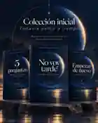
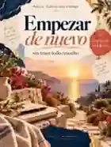

DIARIO GUIADO · 8 REFLEXIONES$4.99
No voy tarde.
Un diario para volver a mí
Para dejar de compararte con el calendario de los demás, volver a escucharte y encontrar tus propias respuestas.
Conocer el diario↗PDF digital · Próximamente✳ UN PODCAST PARA LOS QUE SIGUEN INTENTÁNDOLO
Una conversación sobre la vida que imaginamos, la que tenemos y todas esas cosas que todavía queremos vivir.
 Con DailinUn nuevo capítulo cada martes
Con DailinUn nuevo capítulo cada martes
01 / NUESTRA PRIMERA COLECCIÓN
No otro manual para tener la vida perfecta. Dos cuadernos para acompañarte en las preguntas que importan, y una pequeña guía para comenzar.

Un diario para volver a mí
Para dejar de compararte con el calendario de los demás, volver a escucharte y encontrar tus propias respuestas.
Conocer el diario↗PDF digital · Próximamente
02 / WORKBOOKSin tener todo resuelto
Para ordenar lo que sientes, elegir por dónde empezar y convertir decisiones grandes en pasos pequeños.
Conocer el workbook↗PDF digital · Próximamente«No tienes que tenerlo todo resuelto para merecer una vida bonita.»
— con cariño, Dailin ♡02 / UN PEQUEÑO COMIENZO · GRATIS
Cuando sientes que vas tarde, todo el mundo tiene una opinión. Esta guía no viene a decirte qué hacer. Viene a ayudarte a escuchar la tuya.
03 / DETRÁS DEL MICRÓFONO
Empecé este espacio porque hay conversaciones que una tiene en su cabeza y casi nunca dice completas. A veces decimos «estoy bien», cambiamos de tema… y seguimos con lo nuestro.
Acá hablamos de lo que imaginábamos, lo que sentimos y lo que todavía queremos intentar. Sin fingir que ya encontramos todas las respuestas.
esto también forma parte de mi historia ♡
NOS ESCUCHAMOS LOS MARTES
Una conversación a la semana, sin fingir que tenemos todas las respuestas.
04 / ANTES DE EMPEZAR
Un archivo PDF digital. No realizamos envíos físicos. Activaremos los pagos únicamente cuando el PDF y la entrega automática estén probados.
No. Se inspiran en las conversaciones del podcast, pero puedes utilizarlos por separado.
Estamos preparando una versión cómoda para leer desde el móvil y verificaremos los archivos antes de venderlos.
Sí. Será un recurso descargable sin costo cuando el PDF definitivo esté listo.